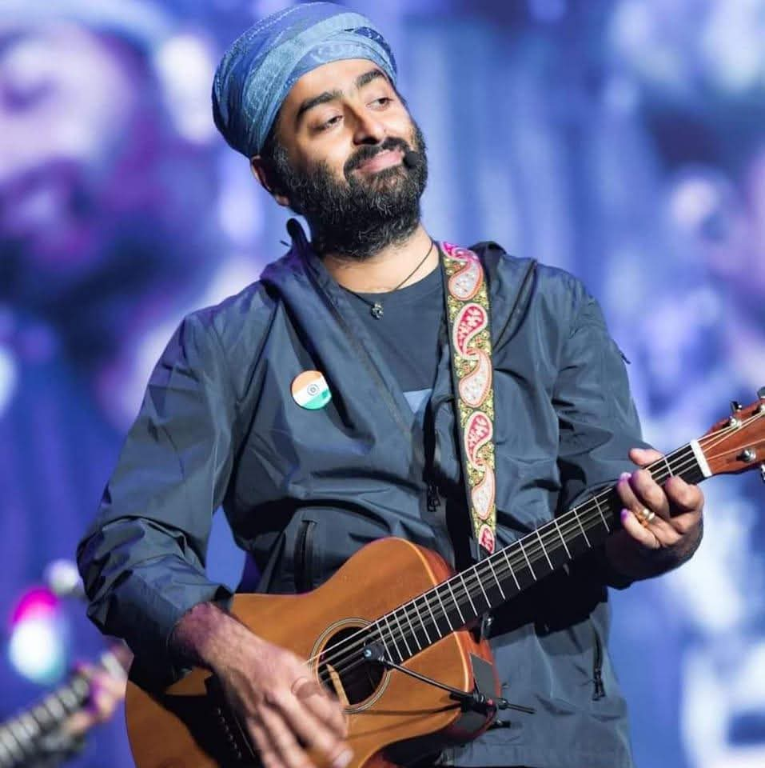
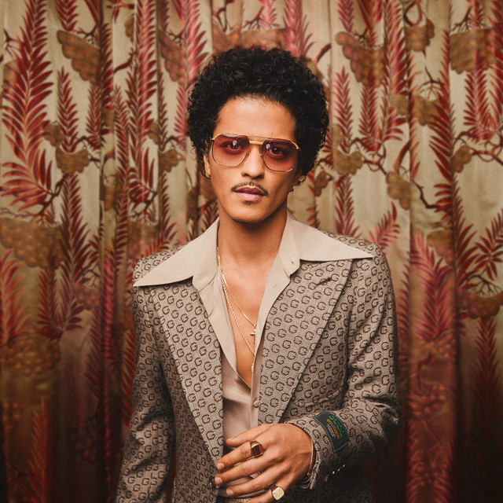

Music Genre : Indian Pop and R&B
n Indian playback singer, composer, music producer and instrumentalist.
Same Beats • New Talents

n Indian playback singer, composer, music producer and instrumentalist.

Grammy-winning American singer, songwriter, and producer from Honolulu, Hawaii
Primarily creates Punjabi Pop, blending traditional Punjabi music and folk with modern Bhangra, Hip-Hop, and R&B

He revolutionized the Indian music industry by fusing Punjabi folk music with Western hip-hop beats

American singer and actress
Often conceals his face, creating mystery, while another prominent figure, Talwinder Singh Parmar